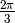
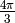

The user will be walked through a complete example to show how to use the main programs and hopefully easily compute the Quantum Conductance of a Large Scale system from a single LCR-type calculation with Wannier90.
We will be studying a (3,3) Carbon Nanotube (Armchair-type Carbon Nanotube) with a single Hydrogen defect functionalized on one of the sidewall carbon atom as shown on the figure below.
Before to even start using this package and any of the main programs, we need first to compute the Wannier Functions and express the full Hamiltonian matrix (left lead, central region, right lead and connection matrices) in the Wannier Function basis.
For this we will be using the PWscf code from the QUANTUM-ESPRESSO distribution. What we need for computing the Wannier Functions are the following input files :
- an input file scf.in for computing the electronic ground state of the system (Γ-point calculation)
- an input file nscf.in for computing the necessary amount of bands at Γ
- an input file pw2wannier90.in for computing the required Amn and Mmn matrices (needed by the Wannier90 code for computing the Wannier Functions later on)
- an input file cnt33H.win which corresponds to the Wannier90 master input file
- The necessary input files are given below :
In order to compute the Wannier Functions for that defected nanotube, follow the following steps:
- First compute the Ground State of the system with PWscf (We assume the user knows how to use PWscf)
pw.x < scf.in > scf.out
- Then run the Band calculation with:
pw.x < nscf.in > nscf.out
- Now we need to run Wannier90 as a post-processing in order to generate the cnt33H.nnkp file:
wannier90.x -pp cnt33H
- We then compute the Amn and Mmn matrices with pw2wannier90:
pw2wannier90.x < pw2wannier90.in > pw2wannier90.out
- At last we generate the Wannier Functions of the system with Wannier90:
wannier90.x cnt33H
If everything runs smoothly, the user should end up with a nicely converged set of Wannier Functions (look at the cnt33H.wout file for this). The next step is to run the LCR Quantum Conductance calculation by following those steps:
Uncomment the lines in cnt33H.win starting with a # symbols (everything concerning transport)
- Re-run Wannier90 again:
wannier90.x cnt33H
- Normally, the code should exit without errors and produce many new files. Those files are:
- cnt33H_dos.dat
- cnt33H_qc.dat
- cnt33H_htL.dat, cnt33H_htLC.dat, cnt33H_htC.dat, cnt33H_htCR.dat, cnt33H_htR.dat
- cnt33H_tran_info.dat
Now that we have computed all the needed matrices, we will be in a position to use the main programs and play around with these matrices. The user will be shown how to use the programs to generate a Large Scale structure and compute its Quantum Conductance.
Visualizing the influence of the defect
First let us visualize how the Hydrogen defect impacts the “on-site” matrix elements for each Wannier Functions. To this end we will be using visualize_defect_influence.py. Moving to the directory that contains the file cnt33H_tran_info.dat we execute the following command in a terminal:
python /path/to/visualize_defect_influence.py -f cnt33H_tran_info.datThe user should of course replace /path/to/visualize_defect_influence.py by the actual path to the program visualize_defect_influence.py on his/her computer. One then can save the image with Mayavi and obtain the picture below:
The white semi-transparent balls represent the atoms in the nanotube. The colored balls with different sizes represent the “on-site” matrix elements. The larger the size of the ball the more deviation in the matrix element from the left-most reference unit cell there is. As we can see, the Hydrogen defect really perturbs the Wannier Functions around it but beyond a few chemical bonds from the defect, the deviations go quickly to zero. This allows us to determine that, a priori, one can get as close as one unit cell away from the defect (on both sides) without “feeling” the infuence of the defect too much.
Generating rotationally equivalent conductor matrices
As one can easily realize by inspecting the structures, the lead part of the nanotube possesses a  rotational symmetry about its axis. This symmetry is shown below by looking at the 3 rotated equivalent structures along the nanotube axis.
In order to generate the Hamiltonian matrices for the 120-degre and 240-degre rotated systems, we will use rotate_conductor.py. The use is quite simple and all we need to know is how many radians is 120 degres (~2.09439510239):
python /path/to/rotate_conductor.py -f cnt33H_tran_info.dat -m cnt33H_htC.dat -a 2.09439510239This command will produce a file called rotated_matrix_htC.dat that we will rename cnt33H_120_htC.dat because it corresponds to the rotated system. In analogy to the above procedure, we can easily produce the Hamiltonian matrix corresponding to the  rotated system (that we will call cnt33H_240_htC.dat).
Note
The program will also re-generate a *_tran_info.dat file because the structure has been changed (atoms have been rotated). The user is urged to use this new *_tran_info.dat file for all subsequent calculations on the “rotated” system. We will call cnt33H_120_tran_info.dat and cnt33H_240_tran_info.dat the new *_tran_info.dat files for respectively the 120-degre and 240-degre rotated systems.
Generating translationally inequivalent conductor matrices
Now that the 3 rotationally equivalent matrices have been obtained, we will make use of our findings at step 1. Indeed we saw that the influence of the Hydrogen defect was local and so we could easily imagine “chopping” off some lead unit cells on both side of the defect without destroying the transferability of the conductor matrix. The reason for doing so is to increase the defect density along the nanotube axis, when at the final step, we will combine those matrices together to produce a Large Scale structure. For this task we will make use of cut_conductor.py:
python /path/to/cut_conductor.py -f cnt33H_tran_info.dat -m cnt33H_htC.dat -aThis piece of code will output something similar to the following on screen:
[prompt] python /path/to/cut_conductor.py -f cnt33H_tran_info.dat -m cnt33H_htC.dat -a LARGE SCALE QUANTUM CONDUCTANCE PACKAGE Nicolas Poilvert program cut_conductor.py program started on Tuesday, 15 June 2010 at 04:26:42 Reading ../conformation_1/cnt33H_1_tran_info.dat : 100% [##########################] Time: 00:00:00 Loading matrix : 100% [############################################################] Time: 00:00:00 Number of left cells to remove in the conductor : 1 Number of right cells to remove in the conductor : 1 Writing matrix to file : 100% [####################################################] Time: 00:00:00 Writing matrix to file : 100% [####################################################] Time: 00:00:00 Writing matrix to file : 100% [####################################################] Time: 00:00:00 Writing matrix to file : 100% [####################################################] Time: 00:00:00 Execution time : 3.25 sThe user has to enter the number of left and right unit cells that are going to be “chopped” off from the Hamiltonian matrix. The user ends up with a set of directories corresponding to every possible cutting scheme (in this case, we can only cut at most 1 unit cell on both sides which leads to 2*2 = 4 different matrices). After this step, the user still has to follow the same procedure for the other 2 rotated equivalent matrices:
python /path/to/cut_conductor.py -f cnt33H_120_tran_info.dat -m cnt33H_120_htC.dat
python /path/to/cut_conductor.py -f cnt33H_240_tran_info.dat -m cnt33H_120_htC.dat
Building a Large Scale structure
We are now all set for building a random or custom Large Scale structure from our “building blocks”. The program allowing us to do such a thing is system_builder.py.
First let us gather all the directories generated at the previous steps into one and let us call this directory building_blocks. Your directory should then contain 12 subdirectories as shown below:
[prompt] ls building_blocks/ 0_left_0_right_0d 0_left_0_right_120d 0_left_0_right_240d 0_left_1_right_0d 0_left_1_right_120d 0_left_1_right_240d 1_left_0_right_0d 1_left_0_right_120d 1_left_0_right_240d 1_left_1_right_0d 1_left_1_right_120d 1_left_1_right_240dWe have one last step before to generate a structure. We need a matrix that will play the role of a pristine lead. Luckily the user has nothing to do since that matrix is readily available from the Wannier90 code. Indeed the cnt33H_htL.dat matrix already correspond to such a lead matrix. So let us create a lead/ directory and copy cnt33H_htL.dat in it remembering to change the name into cnt33H_htC.dat (this is a requirement from the program system_builder.py).
Let us now generate a random structure with 5 defects by typing:
python /path/to/system_builder.py -rThe program will then ask you a few questions concerning the system. The output should look like this:
[prompt] python /path/to/system_builder.py -r LARGE SCALE QUANTUM CONDUCTANCE PACKAGE Nicolas Poilvert program system_builder.py program started on Wednesday, 16 June 2010 at 04:17:58 The program found the following defects : 1_left_0_right_240d 0_left_1_right_0d 0_left_1_right_240d 0_left_0_right_120d 1_left_1_right_0d lead 1_left_0_right_120d 0_left_0_right_0d 1_left_1_right_240d 1_left_0_right_0d 0_left_0_right_240d 0_left_1_right_120d 1_left_1_right_120d which defect represents the lead : lead how many defects in the system : 5 Loading matrix : 100% [############################################################] Time: 00:00:00 Loading matrix : 100% [############################################################] Time: 00:00:00 Loading matrix : 100% [############################################################] Time: 00:00:00 Loading matrix : 100% [############################################################] Time: 00:00:00 Loading matrix : 100% [############################################################] Time: 00:00:00 how many unit cells in one principal layer : 3 how many buffer unit cells between defects : 0 Writing matrix to file : 100% [####################################################] Time: 00:00:02 Time to build matrix : 10.61 sThe program starts by asking what the lead matrix will be. In our case, this is simply lead. After that the program wants to know how many lead unit cells there is in one principal layer. In our case it is 3 (this should correspond to the number in the original *_tran_info.dat file, line 3). At last, the code gives the user the possibility to insert lead unit cells between each defect. In our case we chose 0.
If one looks at the content of the directory building_blocks/ there should be one new directory called random_system:
[prompt] ls building_blocks/ 0_left_0_right_0d 0_left_0_right_120d 0_left_0_right_240d 0_left_1_right_0d 0_left_1_right_120d 0_left_1_right_240d 1_left_0_right_0d 1_left_0_right_120d 1_left_0_right_240d 1_left_1_right_0d 1_left_1_right_120d 1_left_1_right_240d lead random_systemMoving into this directory cd random_system/, we can directly start a Wannier90 calculation from there:
wannier90.x random_systemThe computed Quantum Conductance of this 5-defect system is shown on the figure below.
{kind=link}
{kind=link}
{kind=link}
{kind=link}